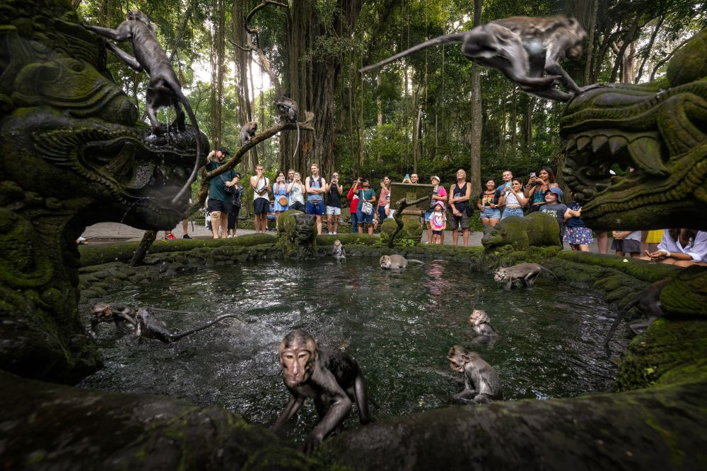
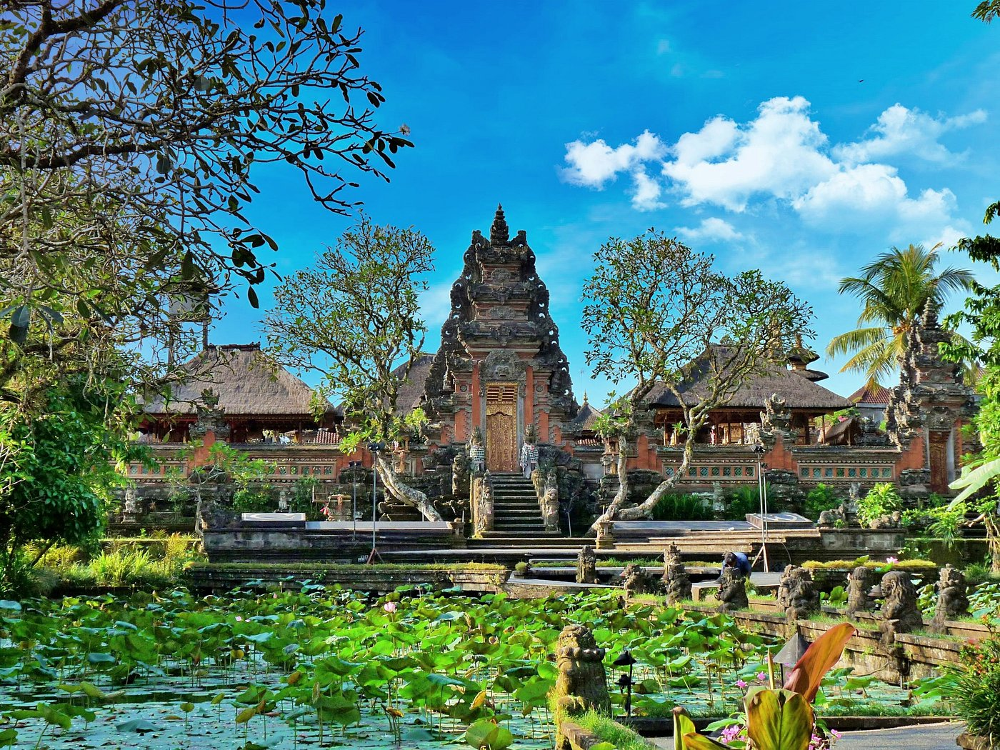

Sacred Monkey Forest Sanctuary
Ini bukan sekadar tempat untuk melihat kera yang menggemaskan. Mandala Suci Wenara Wana adalah sebuah kompleks cagar alam dan pura yang memiliki makna spiritual mendalam bagi masyarakat Padangtegal. Berjalan di bawah kanopi pohon-pohon raksasa yang berusia ratusan tahun sambil berinteraksi dengan kera-kera ekor panjang yang jinak namun tetap liar adalah pengalaman yang benar-benar magis dan tak terlupakan.
Di dalam hutan suci ini terdapat tiga pura kuno yang berasal dari abad ke-14, masing-masing dengan arsitektur dan ornamen yang mencerminkan keagungan masa lalu. Pura Dalem Agung Padangtegal, Pura Beji, dan Pura Prajapati berdiri tegak di antara pepohonan, menambah aura mistis dan spiritual yang kental terasa di setiap sudut hutan ini.


Pasar Seni Ubud

Terletak strategis di jantung kota Ubud, Pasar Seni Ubud adalah surga sejati bagi para pemburu oleh-oleh dan pecinta seni rupa tradisional. Di sini, Anda bisa menemukan berbagai macam barang unik, mulai dari tas anyaman rotan buatan tangan yang indah, patung kayu dengan detil rumit, kain sutra bermotif tradisional, hingga lukisan dengan gaya khas Bali yang memukau.
Pasar ini terbagi menjadi dua area utama: bagian barat didominasi oleh seni dan kerajinan tangan berkualitas tinggi, sementara bagian timur lebih fokus pada kebutuhan sehari-hari dan pasar makanan tradisional dengan aroma rempah yang menggoda. Jangan ragu untuk menawar dengan sopan, karena itu adalah bagian integral dari pengalaman berbelanja autentik di sini.
Pura Taman Saraswati
Salah satu pura paling fotogenik di seluruh Bali, Pura Taman Saraswati didedikasikan untuk Dewi Saraswati, dewi pengetahuan, seni, dan kebijaksanaan dalam mitologi Hindu. Pura ini terkenal dengan kolam teratai yang memesona, yang mengarah ke panggung utama di mana sering diadakan pertunjukan tari Kecak atau Legong yang spektakuler pada malam hari.

Arsitekturnya yang anggun dan penuh detail, dirancang oleh maestro seni I Gusti Nyoman Lempad pada tahun 1950-an, menjadikannya oase ketenangan spiritual di tengah hiruk pikuk aktivitas Jalan Raya Ubud. Saat matahari terbenam, cahaya keemasan memantul di permukaan air, menciptakan pemandangan yang hampir surreal.